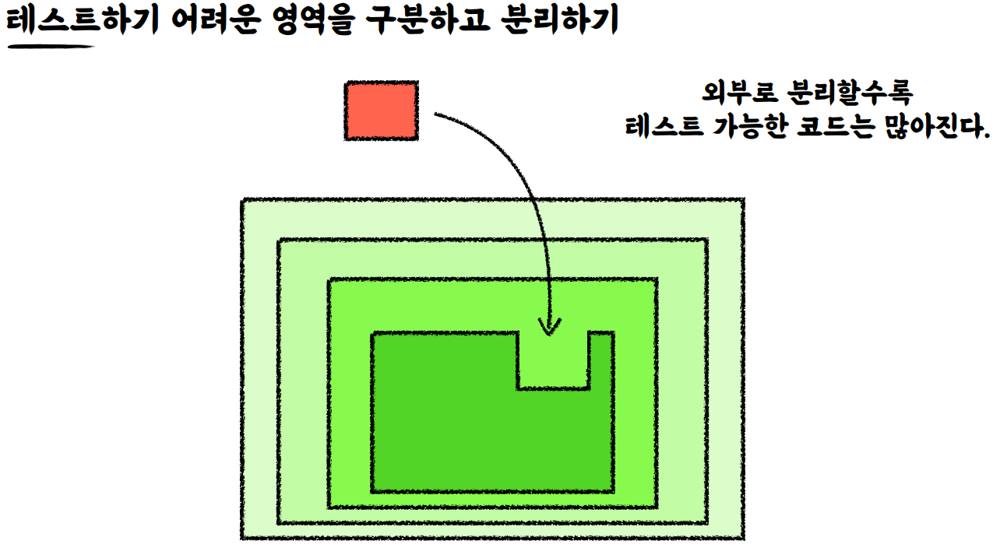
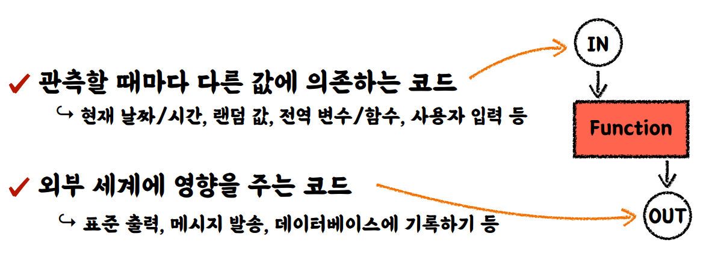

테스트하기 어려운 영역을 분리하기
- 요구사항 추가
가게 운영 시간( 10:00~22:00 ) 외에는 주문을 생성할 수 없다.
- 제약조건 추가
현재시간이 운영시간이 아닐경우 주문을 할수가 없다.
기존 방식 테스트 코드
요구사항 추가 비즈니스 코드
테스트 코드
현재 테스트 코드는 createOrder()를 실행할 때마다 변경되는 LocalDataTime.now()에 따라 결정 됩니다.
LocalDateTime을 DI를 통해서 주입을 하면 테스트할 때 변경이 가능합니다.
LocalDateTime 주입받기
비즈니스 로직 수정
비즈니스 로직
public Order createOrder(LocalDateTime currentDateTime) { LocalTime currentTime = currentDateTime.toLocalTime(); if(currentTime.isBefore(CAFE_OPEN_TIME) || currentTime.isAfter(CAFE_CLOSE_TIME)){ throw new IllegalStateException("주문은 10시부터 22시까지 가능합니다."); } return new Order(currentDateTime, beverage); }프로덕션 코드
cafeKiosk.createOrder(LocalDateTime.now());
테스트 코드
해피케이스
@Test void createOrderWithOpenTime(){ //given CafeKiosk cafeKiosk = new CafeKiosk(); cafeKiosk.add(new Americano(), 2); //when LocalDateTime openTime = LocalDateTime.of(2024, 1, 1, 10, 0, 0); Order beverage = cafeKiosk.createOrder(openTime); //then Assertions.assertThat(beverage.getBeverages()).hasSize(2); Assertions.assertThat(beverage.getBeverages().get(0).getName()).isEqualTo("아메리카노"); }예외케이스(
경계값)@Test void createOrderWithoutOpenTime(){ //given CafeKiosk cafeKiosk = new CafeKiosk(); cafeKiosk.add(new Americano(), 2); //when LocalDateTime notOpenTime = LocalDateTime.of(2024, 1, 1, 9, 59, 5); //then Assertions.assertThatThrownBy(() -> cafeKiosk.createOrder(notOpenTime)) .isInstanceOf(IllegalStateException.class) .hasMessage("주문은 10시부터 22시까지 가능합니다."); }
테스트하기 어려운 영역을 구분하고 분리하기
테스트 가능한 코드가 있을때 현재 시간등 제약 조건이 있어 테스트가 어려운 코드가 생겼다면 전체가 테스트가 어려워집니다. 테스트를 수행할때마다 테스트 결과값이 달라집니다.
다음 조치로 테스트 영역을 외부로 분리를 했다.

외부에 받도록 해서 실제 프로덕트 코드에는 주입을 해주고 기능을 동작하도록 하고 테스트코드에서는 원하는 값을 넣어서 테스트를 했다. 우리가 원하는건 LocalDateTime.now()의 시간을 확인하는게 아니라,
테스트 하고자 하는 영역은 어떤 시간이 주어졌을 때 시간 범위안에 시각을 가지고 결과값을 판단하는게 목적이다. 테스트 코드 상에서 원하는 값을 넣을수 있도록 설계를 변경하는게 엄청 중요하다.
테스트 하기 어려운 영역을 외부로 분리를 하면 계속 외부에서 분리를 할수 있게 된다. 상단으로 올라갈수록 테스트가 가능한 코드는 많아진다.
저 빨간색 영역이 멈추는 영역이 생긴다.
그 영역부터는 테스트를 하기 어려운 영역으로 변경이 된다. 어느 외부 계층까지 분리를 해야하나요 ? 가장 상단으로 올려야하는 건가?
어떤 영역이 테스트하기 어려운 영역인가?
- 관측할 때마다 다른 값에 의존하는 코드
현재 날짜/시간, 랜덤 값, 전역 변수/함수, 사용자 입력 등
전역 변수/함수는 다른 곳에서도 변경을 할수 있기 때문입니다. 사용자가 값을 입력할때마다 테스트 결과가 달라진다.
- 외부 세계에 영향을 주는 코드
표준 출력, 메세지 발송, 데이터베이스에 기록하기 등
log,e-mail전송,파일에 값을 기록할때 외부세계에서 값이 들어오고 함수가 그 외부 값에 의존하고 있을때 테스트하기가 어렵고, 제어를 할수없다.

어떤 함수가 있을 때 관측할 때마다 외부 세계를 의존하는 경우 그 값을 제어할 수가 없습니다.
함수의 결과가 외부 세계에 영향을 주고 있고, 다른 함수가 영향을 받는다면 테스트하기 어려운 함수입니다.
테스트 하기 좋은 코드(순수함수)
외부 세계와 단절된 함수
같은 입력에는 항상 같은 결과
테스트하기 쉬운 코드
정리
단위 테스트시 외부 세계의 값을 의존하거나 영향을 주어서 테스트 마다 결과가 달라진다면 테스트를 제어할 수가 없고 테스트 코드 자체를 작성하기도 어려워 집니다.
그런 경우 외부로 분리를 하여 제어할 수 있는 환경으로 만드는걸 고민해야합니다.